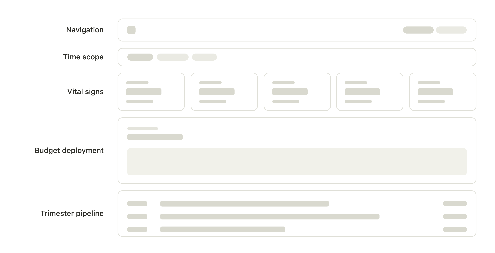

Data Visualization Dashboard Design Decision Support Tool
Leadership had no high-level view of the program. To get one, they had to request a report and wait days for it.
This is the story of building the executive layer on top for an already existing internal system.
Role Lead Product Designer, UX Researcher
Type Dashboard · Data Visualization · Internal B2B Tool
Timeline Oct 2025 - Feb 2026
01 — The Problem
All the data existed. A way to see it did not.
Problem Statement
Leadership had an operational system for the program, but had no clear overview of the program they were accountable for.
Every read on program health, pace, or where funding was landing had to be assembled by hand into a report, so insight always arrived late.
02 — Understanding the Program
Four facts about the program did more design work than any screen.
The program, RISE PA, is a $40 Million industrial-decarbonization grant initiative, EPA-funded and administered by PennTAP at Penn State.
01
Money has two states.
01
Grantees spend first and are reimbursed later, so committed and disbursed funds differ.
02
The deadline drives everything.
02
All funds must be disbursed by the deadline, or the remainder returns to the EPA.
03
The trimester is the heartbeat.
03
Applications are reviewed three times a year across ten award windows, T1.1–T4.1.
04
Impact is promised before it is proven.
04
Projects pledge emission cuts at award and verify them at completion.
03 — Research
What leadership actually needed to see?
Two things grounded it: a close read of the program itself, and synthesized conversations with program stakeholders.
I focused on what leadership actually looks for
01The questions and metrics that matter to them
02What they watch most closely in the program
03The decisions they make from that information
04The status changes they need to catch
What they said
Vice President
"Every board prep, someone spends three or four days pulling numbers into a deck. By the time we're in the room, the picture's already weeks old."
Director
"The one question I always get asked is whether we'll commit all the funding before the deadline. I should be able to answer that without a spreadsheet."
Finance Lead
"Committed and spent are very different in a reimbursement program. In meetings, people still read committed as money already out the door. I need the two separated."
Director
"I don't need per-project detail, that's in the operational system. I need the overall read and the breakdown: where we stand, are we on pace, is it landing across the state."
04 — Why an Observable System
A dashboard was obvious. The framing was not.
I treated the grant program as an observable system, mapping each part of it onto an observability idea.
Vital signs→golden signals
Budget deployment→capacity against a deadline
The pipeline→throughput
Committed vs realized→forecast vs verified outcome

A wireframe of the layout
05 — Iteration 1: Making It Visible
The first version answered one question well: what the program has done so far.
01
The shell and the time filter
Two tabs, Overview and Statewide Reach.
02
Five vital signs
Obligated, Disbursed, Projects Funded, GHG, Jobs.
03
The Budget Deployment chart
Obligation and disbursement, historical only.
04
The Trimester Pipeline
Volume bars and status chips, plus a funnel.
06 — What Leadership Told Me
It could show the program. It couldn't yet help them decide.
I set out to build a monitoring dashboard. The feedback wanted more: decision-making aids built into the dashboard itself, not just a view of the program.
Each gap, mapped to one addition
"The board's first question is always whether we'll commit all the funding before the deadline, and I'm still doing that projection in my head."Director
→
AdditionForecast + at-risk-of-return
"I do this review every trimester. I don't need the whole program re-explained. I need to know what changed since we last met."Chief of Staff
→
AdditionThe "Since last review" digest
The approach
Added a thin decision-and-narrative layer, through enrichments of existing elements.
07 — Iteration 2: Making It Decidable
★ The hero feature
A runway, and a forecast to the deadline.
Deployment pace against the deadline is the program's defining question, so the runway earns the most space and lands first. Iteration 2 turned a backward-looking pacing chart into a forward-looking risk decision.
★ The co-hero
The "Since last review" digest: just shows what has changed.
Leadership checks in on a trimester cadence, or once in a while, not continuously. The digest gives the dashboard a memory of what has changed since their last visit, so every review opens with what changed instead of a re-explanation of the whole program.
Since last review · T2.1 close+$3.2M obligated·+18 projects funded·+9.0k tCO₂e realized·+31 jobs realized
Statewide reach
Where is the money going, and to whom?
The executives wanted to see impact, fund distribution, and the top-performing industries by region. I chose a choropleth map as the visualization: it delivers all of that in a far more interactive way than charts, tables, and filters could.
The same dashboard, evolved — toggle the iterations
08 — Impact
From a three-day report to a three-minute glance.
The dashboard did two jobs at once. It collapsed the reporting effort that used to consume days, and it turned a monitoring surface into a decision-support tool that flags millions before they are lost.
~$2.8M
Money kept in play
At-risk funding the forecast surfaced early enough to redeploy to other projects, instead of letting it return to the funder unspent.
Report prep
~99%↓
3–4 days of manual work, now always-on.
Review time
~97%↓
1–2 hours of reading, down to 2–3 mins.
Statewide reach
67 / 6
Counties / regions, one view.
Decision support, not just monitoring
The forecast predicts where the program lands, so leadership decides, not just reads.
Self-serve, always current
Leadership opens a live view on their own cadence. No report to wait on.
The whole state in one place
Funding, projects, and impact across every county and region, in one view.
09 — Reflection
The interface was never the hard part. The design was understanding the program well enough to know what leadership actually needed to see.
— Closing reflection
Going in
I came in trying to give leadership everything: every metric, every view of the data.
↓
Coming out
The real work was upstream. Understanding how the program ran made the right decisions obvious, and showed me which ones to leave out. Domain fluency first, then the discipline to act on it.